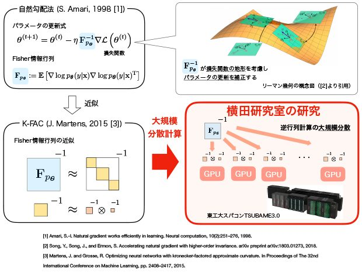
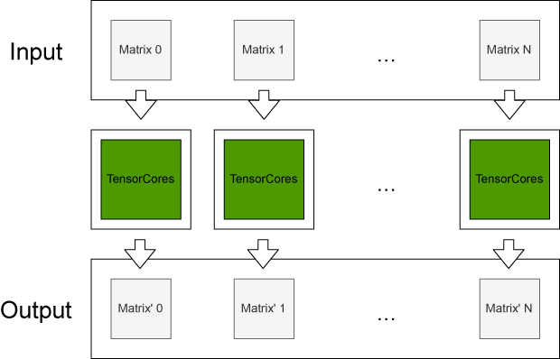

横田研究室では、深層ニューラルネットワーク（Deep Neural Netowrk: DNN）のための最適化手法、及びその大規模分散手法の開発に取り組んでいる。特に層の数が多く、パラメータ数が膨大なDNNを用いた「大規模深層学習」においては、学習の停滞による膨大な学習時間が重大な問題となっており、学習時間を短縮する高速な学習手法の実現が求められている。
DNNを用いた予測モデルの学習では、与えられた学習データに対する予測の「誤差」を表現するために、DNNモデルのパラメータθの 関数である「損失関数L(θ)」を定義し、この最小化問題の反復的解法が用いられる。「自然勾配学習法（Natural Gradient Learning）[1]」はリーマン幾何学に基づく反復的解法で、Fisher情報行列により損失関数の地形を適切に捉え、パラメータの更新方向を補正することで、高速な収束を実現する。「K-FAC法 [3]」はこの自然勾配学習法で計算のボトルネックとなっているFisher情報行列の逆行列計算の効率的な近似手法である。
本研究室ではK-FAC法を大規模深層学習向けに発展させ、東工大スパコン「TSUBAME3.0」をはじめとする大規模計算資源を活用した「大規模分散型のK-FAC法」を開発している。「深層学習の理論に基づく高速な最適化手法」と「高スループットの大規模分散計算・通信手法」の組み合わせにより、画像分類ベンチマーク「ImagetNet」のためのDNNの学習時間において世界最速記録を目指す。
Tensorコアを用いた行列計算の高速化
NVIDIA Voltaアーキテクチャなどに搭載されている混合精度の行列乗算回路であるTensorコアを用いることで多くの行列計算が高速化されることが期待される．
